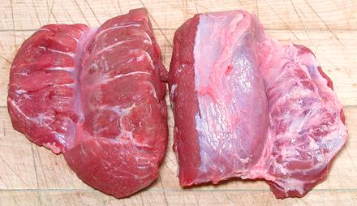

Pork Cheek Meat

This is kind of a "secret cut", unknown to the general public and still
economical. It is very lean and tough, but with a lot of
connective tissue in it, making it moist, tender and very flavorful
with long cooking. Ideal for braises and stews. The photo specimens
(showing both sides) were 3-3/4 ounces each, measuring 3-3/4 inches
long, 3-1/2 wide and 1 inch thick at the thickest part.
More on Cuts of Pork.
Buying:
This is a rarely seen cut here in Southern
California, but I have found it at 168 Market, a large Asian market
Alhambra, packed in the usual shrink wrapped foam trays. Others
have obtained these from specialty butcher shops. I paid 2014 US
$2.89 / pound.
Prep:
Rinse, cut to the size you want (1-1/2 inches is
usually good). Yield approaches 100%.
Cooking:
These take about 1-3/4 to 2 hours of slow
simmering to be nice and tender. They may be stir fried lightly brown
before adding liquid and simmering.
ap_cheekz 091210 - www.clovegarden.com
©Andrew Grygus - agryg@clovegaden.com - Photos on this
page not otherwise credited are © cg1 -
Linking to and non-commercial use of this page permitted